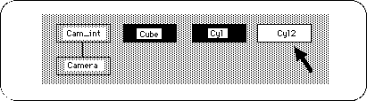
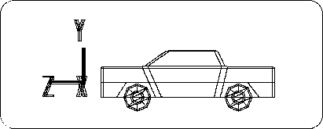
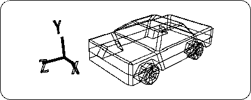
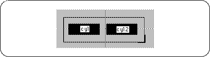
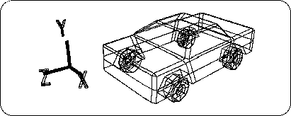
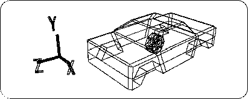

Return to previous page | Return to menu | Go to next page
Now, the car does not run with one tire, so you need to prepare four. Copy and move the finished tire.
Make sure that it is in OBJ mode,
[Duplicate] → [Immediate]
please. There is no change on the 3D View screen, but the object (tire) is duplicated at the same position.
If you look at the Schematic screen, you can see that the object has been duplicated as shown below (Figure 3-47).

When Duplicate in this way, the newly duplicated one is selected.
Click the [TransZ] icon. -Move the tire in the Z direction and place it in the rear tire room (Z value is -1.1600). (Fig. 3-48, 3-49)


The left half of the tire is ready.
From now on, we will create the right half of the tire, but it is only necessary to create two symmetrical objects with respect to the YZ plane. SOFTIMAGE has a useful command [Symmetry] to create a symmetric shape.
Before executing this command, you must first select the underlying object.
Here, try selecting “cyl” and “cyl2” at the same time on the schematic screen ( Spacebar + Left Mouse Button ). Perhaps I couldn't select at the same time? Because it is now in Single mode. Is [Single] under the [Trans] icon on the right of the screen highlighted?
To select multiple items at once, click [Multi] under [Single] .
Next, drag “cyl” and “cyl2” together with the mouse drag (space bar + left mouse button).

The procedure for selecting and deselecting is basically the same as in Single mode.
“Cyl” and “cyl2” are now selected.
Next, to create a symmetric shape,
[Effect] → [Symmetry]
please choose. A window called “Symmetry” will appear. In this case, since we want to make it symmetrical with respect to the YZ plane, check “YZ plane (x = 0)” and click “OK”.
Now, “cyl3” and “cyl4” are new (Figure 3-51).

Here, switch back from Multi mode to Single mode (once all objects will be deselected).
Caution
If you remain in Multi mode, processing will be applied to multiple selected objects.
Try selecting “cyl3” and “cyl4” one by one. RotY should be 180.0000. I want to use this state as a reference, so I set
[Effect] → [Freeze] → [Rotation]
Please do.
By the way, why so far
[Effect] → [Freeze] → [Translation]
In fact, when the model is selected, each value that appears in the 【Trans】 icon is important during programming.
For example, suppose you display this model on Saturn and rotate the tires. In this case, if the tire movement (Trans) is frozen, the tire origin will be the same as the vehicle origin, and the tire will rotate around the vehicle origin. If you want the tire to rotate around the center axis of the tire, you will need to display it on the Saturn without freezing the Trans.
However, if this model is displayed in Saturn without freezing Trans, it will be displayed as shown below (Figure 3-52).

Therefore, it is necessary to tell the programmer each value that appears in the [Trans] icon, have the program transpose the tire to a predetermined position, and have it rotate (here, the X axis) There is.
In this way, with the animated model, it is important to work with the programmer.